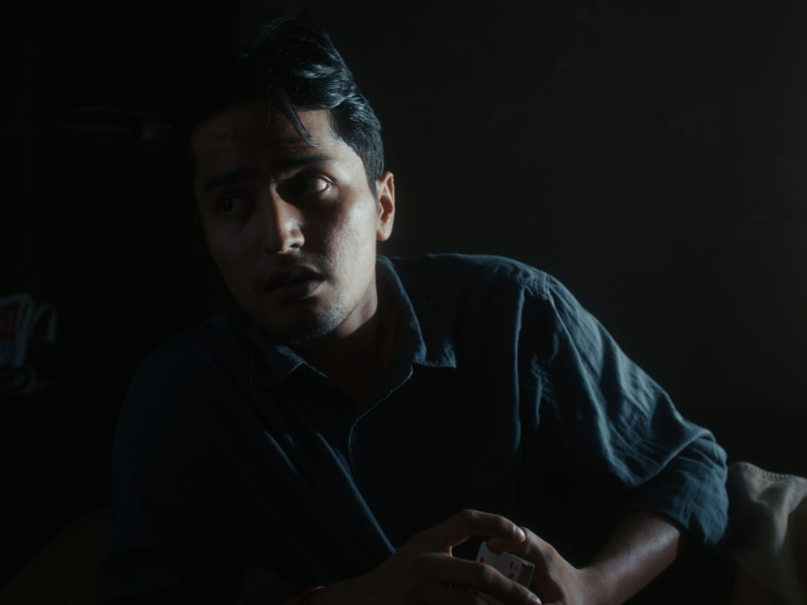
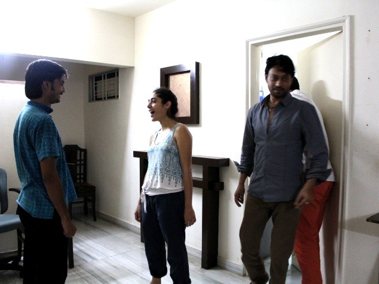
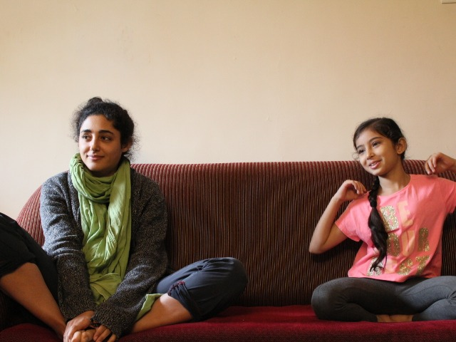
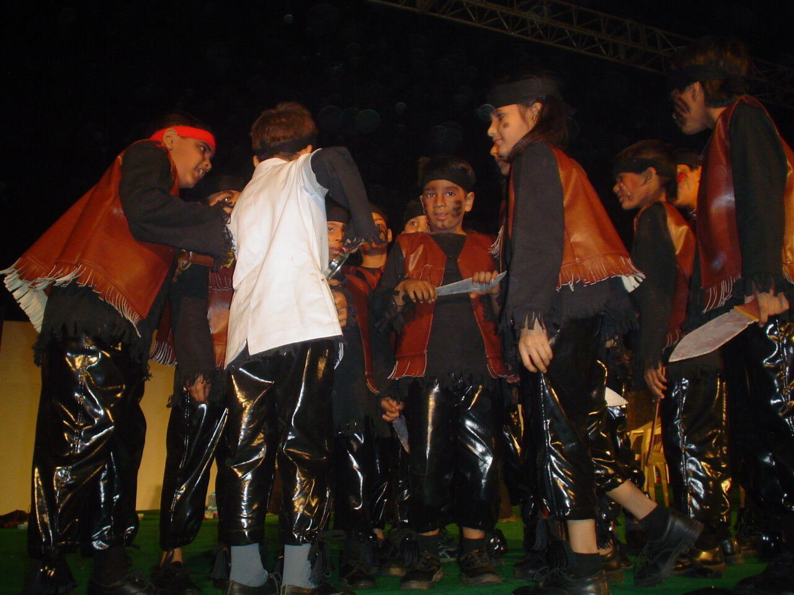

Actors
Three rooms, one practice. Whether the camera is rolling on a film set, an actor is preparing alone, or a child is discovering what it means to be seen, the work begins the same way: from the inside.
Get in Touch
For Production Houses & OTT
Pushpendra works both on set and in pre-production, bringing actors to a place of deep character readiness before the camera rolls. He has workshopped ensemble casts for Netflix's Class and Kohrra Season 1, for Anup Singh's Qissa and Song of the Scorpions, with Golshifteh Farahani and Irrfan Khan among the cast, for Rohena Gera's Sir and the upcoming Stay, for Abhijit Mazumdar's Body, for which Manoj Sharma won Best Actor, and for the upcoming Don't Be Shy, directed by Sreeti Mukerji and produced by Alia Bhatt for Amazon Prime. He has personally coached Tisca Chopra, and workshopped the cast of her directorial debut, Saali Mohabbat (ZEE5, 2025).
His work has shaped performances alongside Golshifteh Farahani, Tillotama Shome, Tisca Chopra, Rasika Dugal, Sara Arjun, Shashank Arora, Vivek Gomber and Geetanjali Kulkarni.
The result is measurable: fewer takes, sharper performances and significantly reduced shoot days. In an industry where every day on set has a cost, this is not just artistic value, it is production value.

Golshifteh Farahani, Shardul Bhardwaj and Irrfan Khan in a workshop for Song of the Scorpions

Golshifteh Farahani and Sara Arjun in a workshop with Pushpendra for Song of the Scorpions
For Individual Actors
Pushpendra trained as an actor at FTII — India's premier film school — and under Barry John, one of India's most influential theatre practitioners. Over the years he has trained in workshops with some of the world's leading practitioners: at Berlinale Talents — as the first Indian actor ever invited to the programme — with Jean-Louis Rodrigue, the movement coach who worked with Leonardo DiCaprio on J. Edgar; with Jasmila Žbanić, Golden Bear winner at Berlin and Oscar-nominated for Quo Vadis, Aida?, on acting in close-up; and with Alby James OBE on script analysis.
Decades of working as an actor, filmmaker and teacher have refined this into a process that consistently works — not borrowed from any single school, but tested across film sets, rehearsal rooms and training sessions worldwide.
From an Actor
In her own words.
That process — applied entirely to one actor and one performance — is available as private, confidential coaching. Whether you are beginning your journey or preparing for a specific role, the work is built entirely around where you are and what you need.
Get in Touch →When a small group of committed actors — between 10 and 20 — comes together, Pushpendra offers a structured 4-week intensive. Five days a week. Building from somatic awareness and truthful behaviour through character discovery to full scene performance. Whether you are beginning your acting journey or already working professionally, the intensive is designed to strengthen your process, deepen your awareness and expand your range.
The next intensive forms when the group is ready.
Write to us →The Seven Pillars of Our Training
Grounding and centering work begins the process, followed by breath and somatic awareness. Actors learn to scan their own bodies, head to toe, noticing sensation without judgment — building the ability to consciously command focus into the body rather than letting it react separately from the mind. The goal is a body that adapts on cue to what a scene demands, not one that betrays the actor with its own unconscious habits.
Every character wears a mask — the version of themselves they choose to show. Using mask work and improvisation, actors learn to play the contradiction between what a character performs outwardly and what their internal monologue is actually saying underneath. A character can be calm on the surface while their inner voice is in crisis — and it is that exact friction, held and played simultaneously, that the camera reads as truth.
A close-up reveals the hidden lies, and it is first reflected in the projected voice. Modern, high-definition microphones can catch the slightest of whispers, removing any need to project or push the voice. Through diaphragmatic breathing and an awareness of the body's natural resonators, actors learn to drop forced theatrical projection and find a grounded, intimate vocal quality that conveys absolute psychological truth on screen.
Film is a director's medium, and an actor who can only work one way will struggle. Through advanced improvisation, status work and animal exercises, actors build the range to adapt to different directorial styles and characterisations — learning to move like a chameleon between worlds, rather than performing the same instrument in every room.
Before an actor says a single line, there is work to be done. This module trains actors to decode a script in full — genre, theme, the world the story inhabits, a character's background, their wants, and the obstacles and urgency standing in their way. At the centre of it all sits relationship: between characters, and between a character and the space they occupy. Within this larger discipline lies a lesson Pushpendra learned firsthand from Irrfan Khan on the set of Qissa — that a character's internal need and their external want are rarely the same thing, and finding that gap is where a performance stops being acted and starts being lived.
Actors learn to think like painters, photographers and sculptors, understanding how a figure occupies space, holds weight, and creates dynamic tension within a frame. Moving beyond simply hitting a mark, this module teaches you to compose your own presence on screen.
Actors learn the craft of blocking and framing, and adapt their performance according to the camera lens — understanding what the camera can and cannot see. The module closes with the business of acting itself: how casting actually works, and what it takes to navigate that world as a working professional.
For Kids & Parents
Acting training for children is not about making them perform, it is about helping them discover themselves.
Drawing from his years with Imago Theatre, Imago Theatre-in-Education — Barry John's company — and Yellow Cat Theatre Company, founded by Sukhesh Arora, Pushpendra brings a uniquely sensitive, inclusive and joyful approach to training young performers. His work has included children and participants who were blind, deaf, non-verbal, or living with physical and neuromotor disabilities.
The training is built specifically for screen — films, OTT and other image media — alongside organic, game-based exploration. Safe, nurturing and deeply professional.
Pushpendra takes on children's coaching selectively — in collaboration with filmmakers and production houses working with young performers, and with theatre groups and educators looking to introduce children to screen.

From the Directors
From Those Who Know the Work
Pushpendra is an extremely generous and perceptive acting coach, constantly adapting his process to the film and the actors he is working with. He has been a tremendous support to me through the process of casting, as well as later helping actors delve deeper into their characters and build their relationships.
Rohena Gera — Director
Sir & the upcoming Stay
The workshop was instrumental in breaking down the barriers of being strangers on set, they began to feel like a real part of this lived in world. I specifically asked him to focus the actors on physical and emotional work, rather than memorizing lines, and this allowed them to inhabit their roles with a deeper comfort and confidence, especially important since the cast was so diverse, from the UK to Bombay to rural Punjab, even with some non actors. Moreover, I must mention Pushpendra Singh, the workshop director, whose approach was truly unique. He consistently introduced new techniques and fresh grammar into workshops, helping the actors understand the world from deep within rather than relying on old props.
Randeep Jha — Director
Kohrra Season 1 (Netflix)
All of them are FTII Acting alumni, and they trained under Pushpendra more than ten years back when they were students. As an acting teacher, Pushpendra had already helped shape their strong acting cores. Bit by bit he helped the actors strip away everything extraneous and reach the core essence of their roles. What helped the actors and the film the most was his process of rehearsals with the actors in almost all the locations during recce.
Abhijit Mazumdar — Director
Body